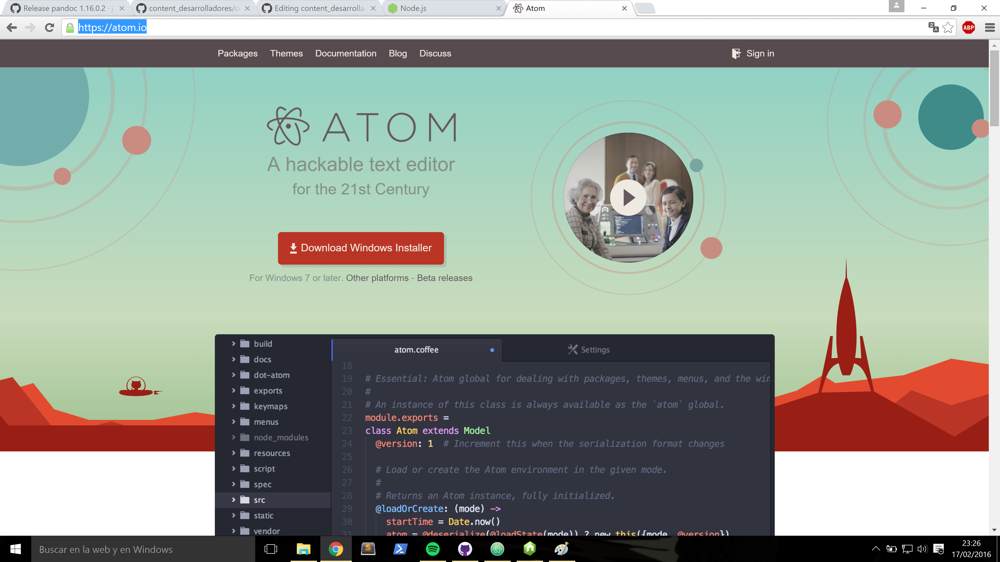

Instalación del editor de texto Atom
Usaremos Atom como editor de texto para el desarrollo de nuestros proyectos, para ello descargamos el instalador en la página oficial de atom y descargaremos el archivo correspondiente a nuestro sistema operativo, en mi caso un windows 64 bits.

A continuación ejecutamos el asistente de instalación, seguimos los correspondiente pasos de proramación.

Dado que vamos a utilizar el formato Markdown es bueno saber que en Atom podremos obtener una preview del contenido de nuestro fichero Markdown ya que incorpora el formato GitHub Markdown con el comando:
Comando
- Markdown preview
ctrl+shift+m- Markdown export to HTML
Save As HTML